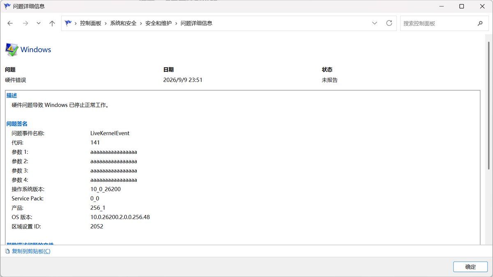
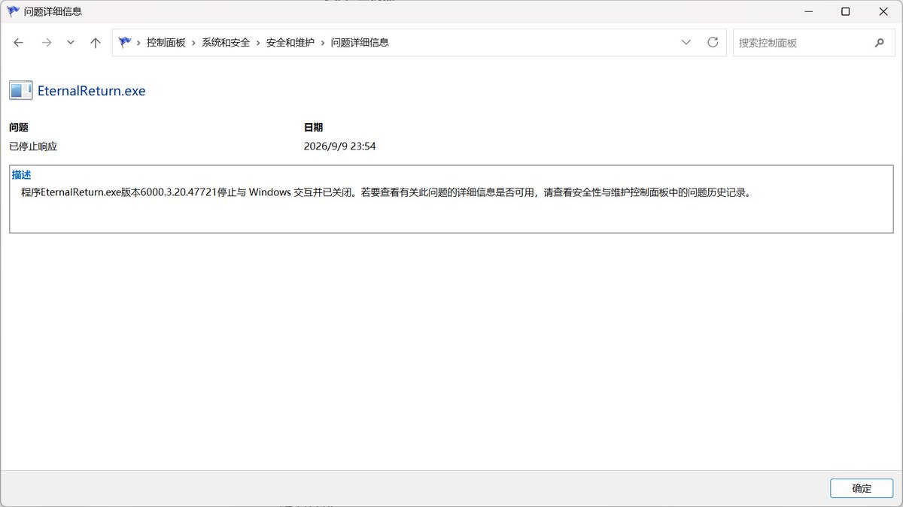
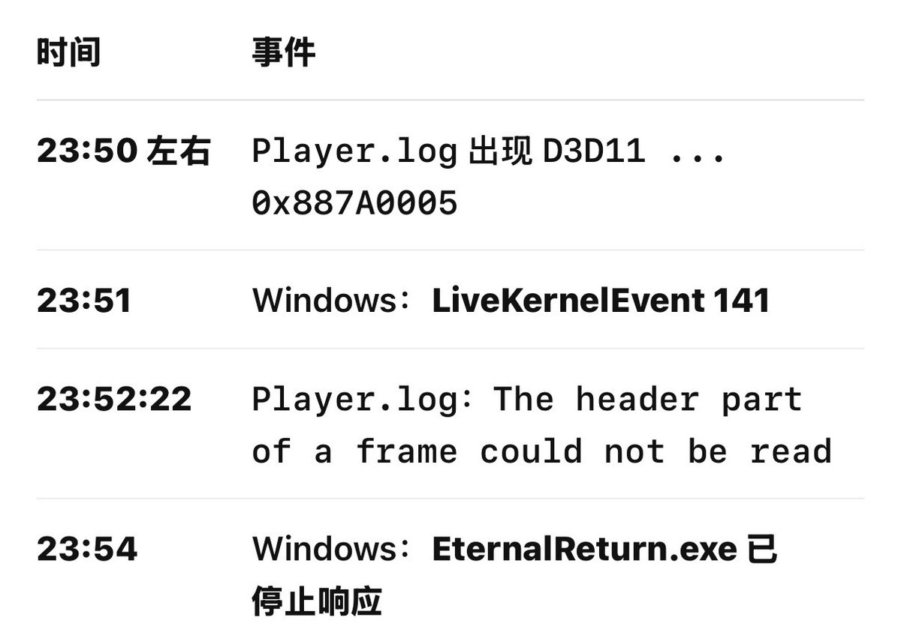

🎀音恋✞Mia🎀（秋叶留未穗版）
@HimeMiya_Nekoo
@linwei130 @Angel_SaveUsAll 推荐截屏给豆包老师看我游戏上很多问题都是这样解决的



小堇&小救「天使夺舍」
@linwei130
求助！有没有懂电脑的大佬能帮帮我
出现的问题是：我在运行永恒轮回游戏时必定在一段时间后未响应
现在已知的情况是：游戏未响应时windows可靠性监视器出现硬件错误LiveKernelEvent 141，
并且在游戏log日志文件中表示D3D11 → 0x887A0005错误代码，并指向我的rtx4060显卡
目前我的系统情况： https://t.co/rKXo1hJkHF